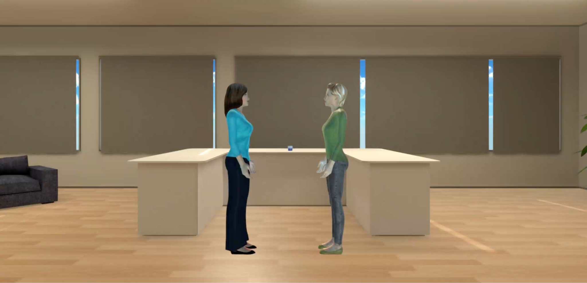
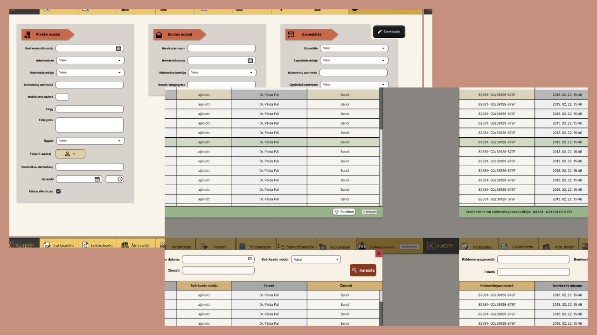
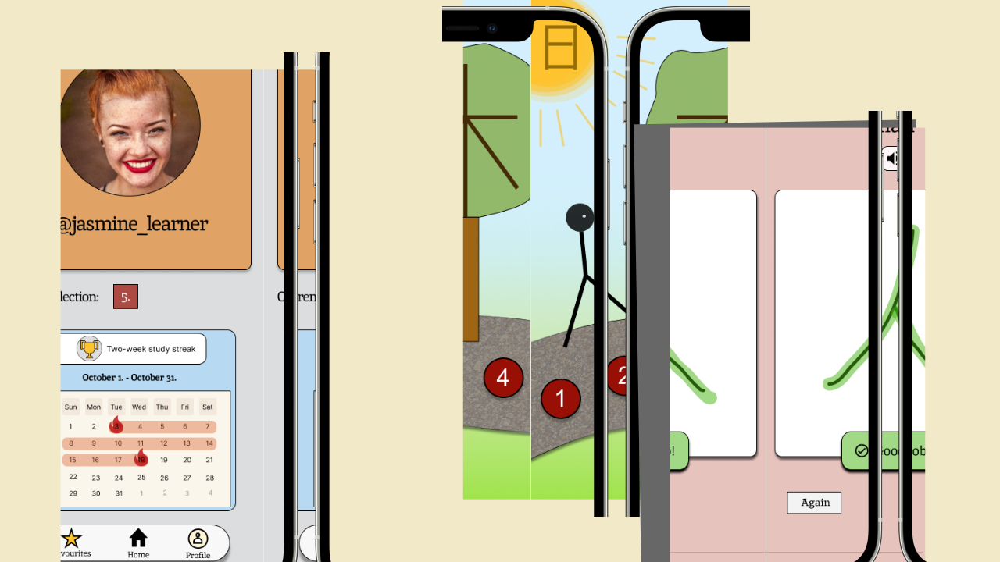

Research project
Impact of Virtual Agents' Behaviour on Obedience and Social Norm Compliance
We conducted a VR experiment with 20 participants to explore how a virtual
agent’s attitude influences behavior and compliance with social norms. Our
findings suggest that friendlier agents encourage more respectful navigation,
while instructions alone have little impact. The study has the potential to be
extended and published for further insights.

KultERP
A DMS for cultural institutions
During my internship at SmartX Solutions, a Hungarian software company, I designed this application
to address new legislative requirements with an easy-to-use document management system.
The design was tailored to meet the needs of clients accustomed to physical document management, making the transition to digital workflows as seamless as possible.

The design was tailored to meet the needs of clients accustomed to physical document management, making the transition to digital workflows as seamless as possible.
Plant app
An application to help you taking care of your plants
I designed this application with four fellow students as a project for the Media Technology
and Interaction Design course, part of my Master's program at KTH.
In response to the course's design brief, our goal was to create a solution that strengthens the connection between people and their houseplants, emphasizing the rewards of plant ownership while offering guidance for the more challenging aspects.
In response to the course's design brief, our goal was to create a solution that strengthens the connection between people and their houseplants, emphasizing the rewards of plant ownership while offering guidance for the more challenging aspects.

Simple Hanzi
Chinese character learning through association
I designed and prototyped this app as part of my Bachelor's thesis, which focused
on enhancing associative learning techniques for Chinese characters within a digital environment.
Through this project, I researched the effectiveness of the proposed learning method featured in the prototype and compared it with traditional approaches to Chinese character learning.

Through this project, I researched the effectiveness of the proposed learning method featured in the prototype and compared it with traditional approaches to Chinese character learning.